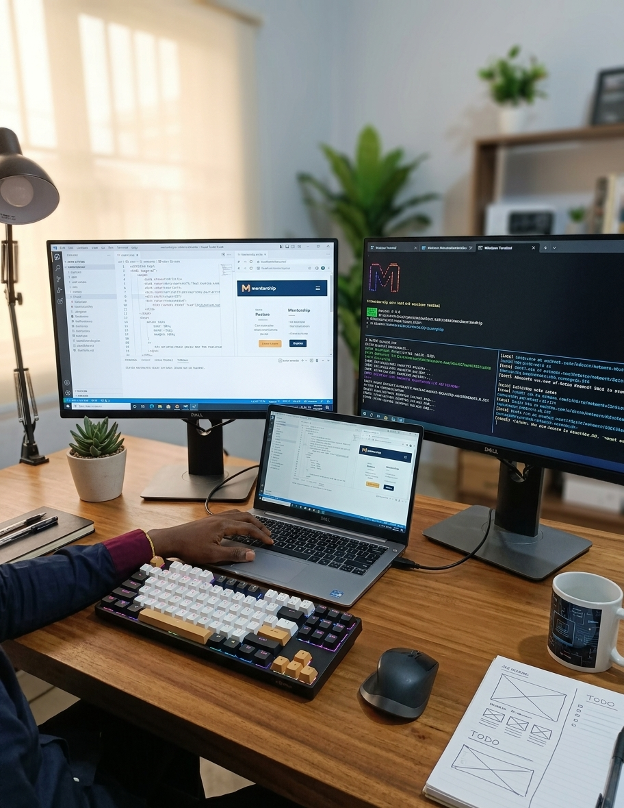

About Me
Hello I am a Junior Web Developer currently mastering web architecture, terminal proficiency, and semantic HTML5 markup.
Featured workspace Setup

Audio Introduction
Listen to a short audio introduction introducing my current projects:
Terminal Workflow Demo
Watch a brief demo of the project setup workflow in the Windows Command Prompt: